Player, NPC and relationship portraits in the agreed painterly anime / chiaroscuro language, followed by a reproducible PixelOE finish. These files are staged in the artwork library; the live game has not been switched to them.
ef-p-m01-infant-infant-v1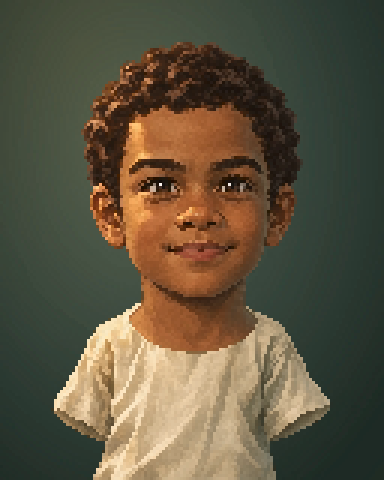
ef-p-m01-child-child-v1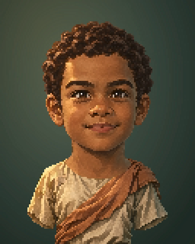
ef-p-m01-child-work-v1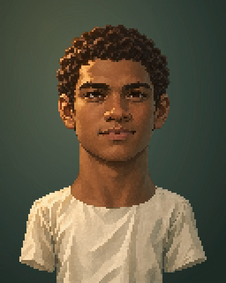
ef-p-m01-youth-youth-v1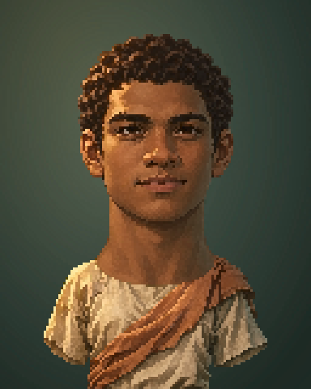
ef-p-m01-youth-work-v1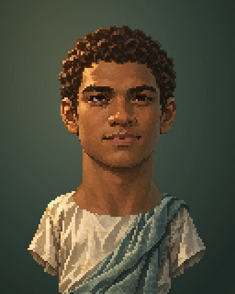
ef-p-m01-youth-maritime-v1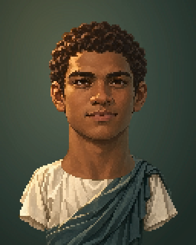
ef-p-m01-youth-scholarly-v1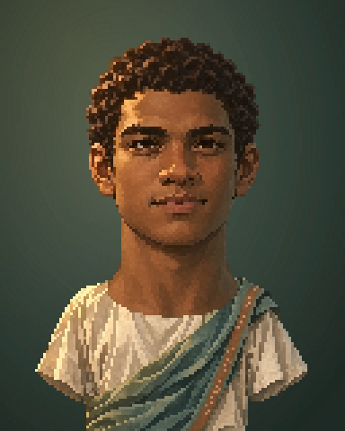
ef-p-m01-youth-performance-v1ef-p-m01-adult-everyday-v1ef-p-m01-adult-work-v1ef-p-m01-adult-maritime-v1ef-p-m01-adult-commerce-v1ef-p-m01-adult-scholarly-v1ef-p-m01-adult-military-v1ef-p-m01-adult-elite-v1ef-p-m01-adult-performance-v1ef-p-m01-middle-everyday-v1ef-p-m01-middle-work-v1ef-p-m01-middle-maritime-v1ef-p-m01-middle-commerce-v1ef-p-m01-middle-scholarly-v1ef-p-m01-middle-military-v1ef-p-m01-middle-elite-v1ef-p-m01-middle-performance-v1ef-p-m01-elder-everyday-v1ef-p-m01-elder-work-v1ef-p-m01-elder-maritime-v1ef-p-m01-elder-commerce-v1ef-p-m01-elder-scholarly-v1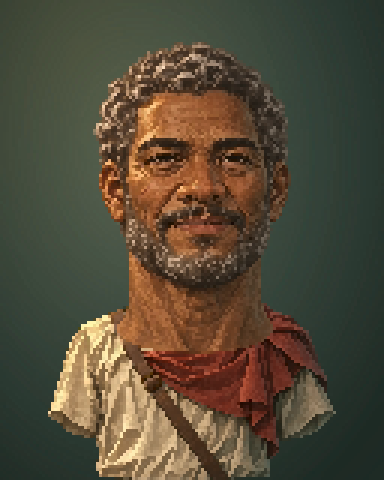
ef-p-m01-elder-military-v1ef-p-m01-elder-elite-v1ef-p-m01-elder-performance-v1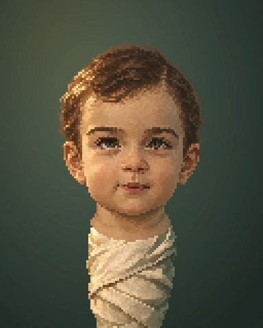
ef-p-m02-infant-infant-v1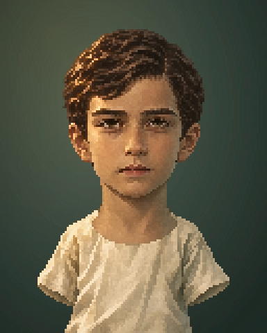
ef-p-m02-child-child-v1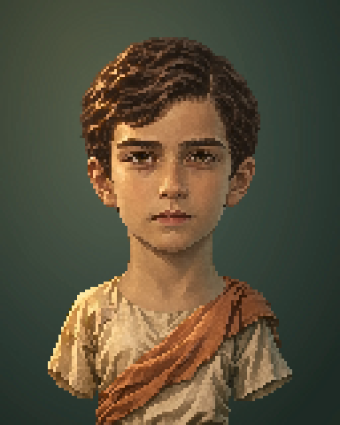
ef-p-m02-child-work-v1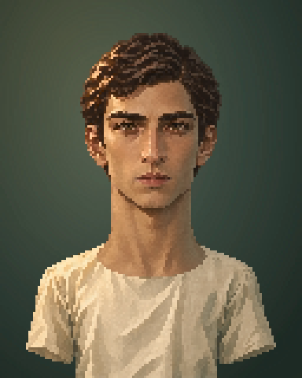
ef-p-m02-youth-youth-v1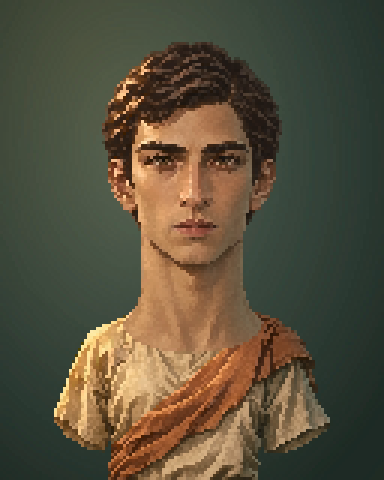
ef-p-m02-youth-work-v1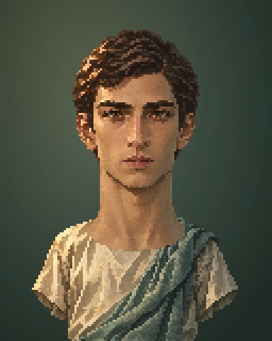
ef-p-m02-youth-maritime-v1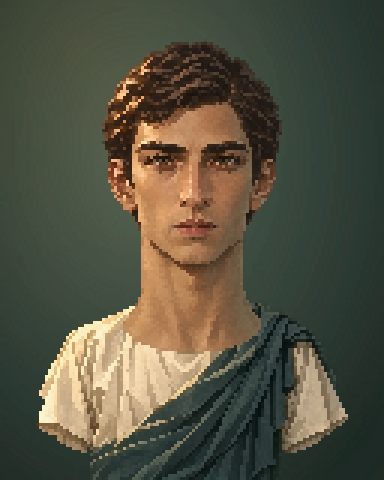
ef-p-m02-youth-scholarly-v1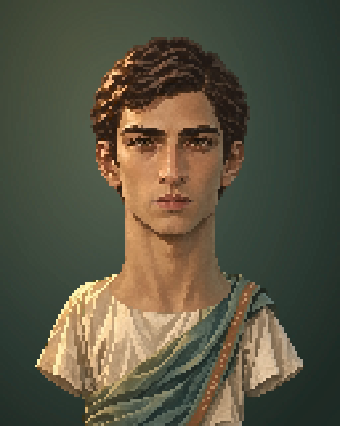
ef-p-m02-youth-performance-v1ef-p-m02-adult-everyday-v1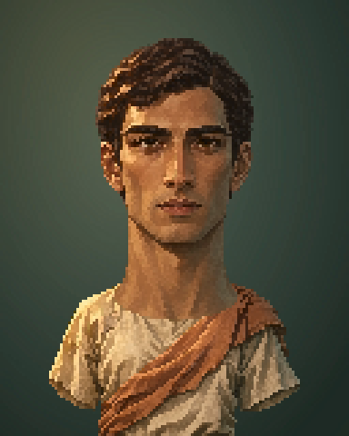
ef-p-m02-adult-work-v1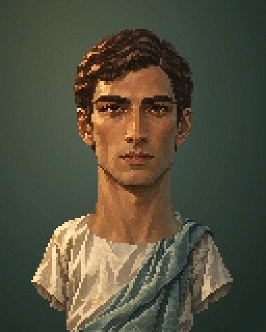
ef-p-m02-adult-maritime-v1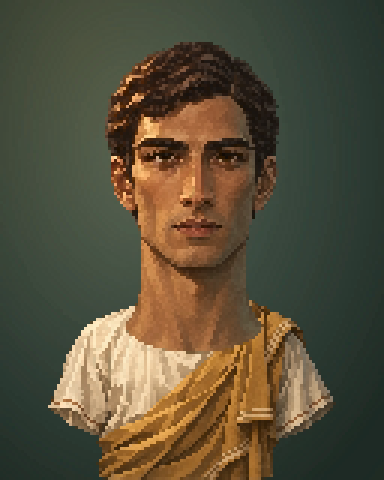
ef-p-m02-adult-commerce-v1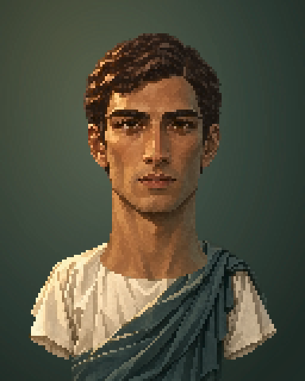
ef-p-m02-adult-scholarly-v1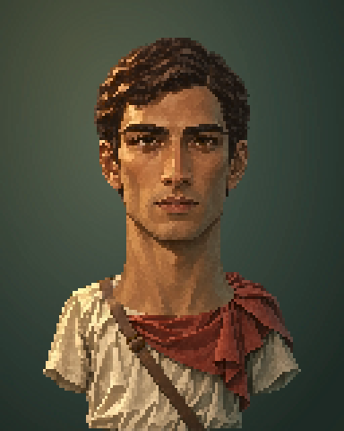
ef-p-m02-adult-military-v1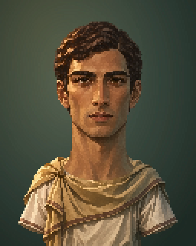
ef-p-m02-adult-elite-v1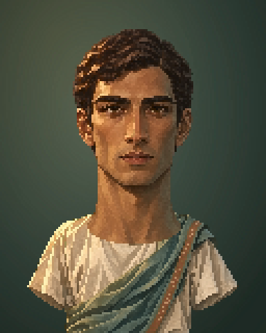
ef-p-m02-adult-performance-v1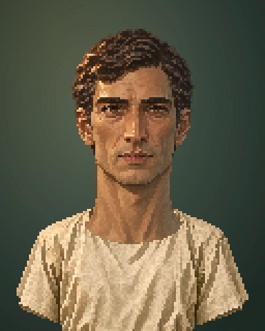
ef-p-m02-middle-everyday-v1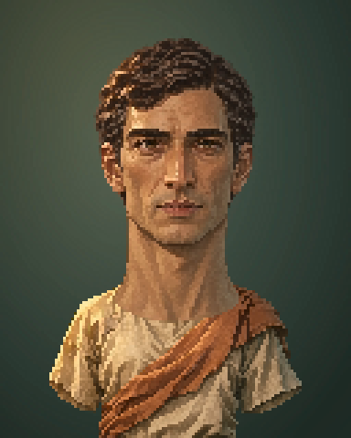
ef-p-m02-middle-work-v1ef-p-m02-middle-maritime-v1ef-p-m02-middle-commerce-v1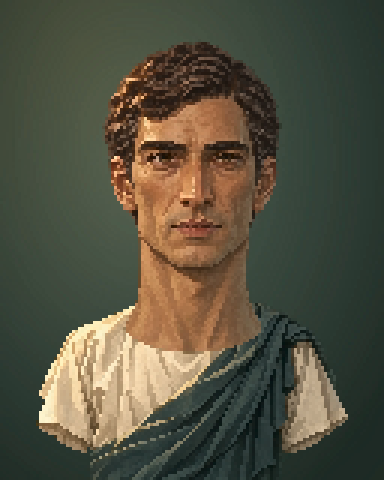
ef-p-m02-middle-scholarly-v1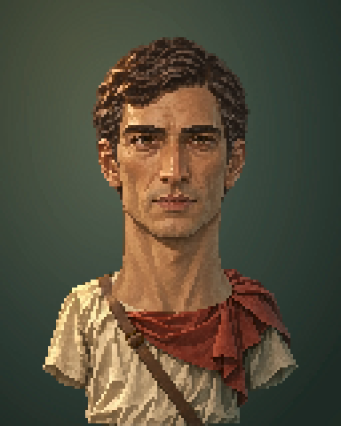
ef-p-m02-middle-military-v1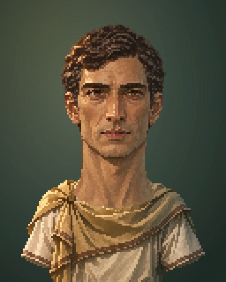
ef-p-m02-middle-elite-v1ef-p-m02-middle-performance-v1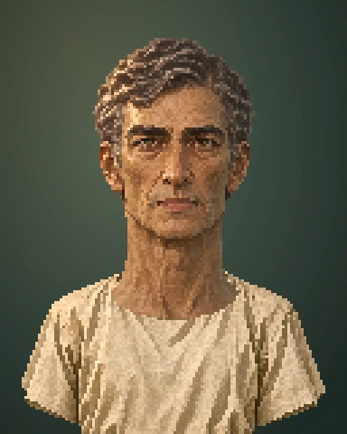
ef-p-m02-elder-everyday-v1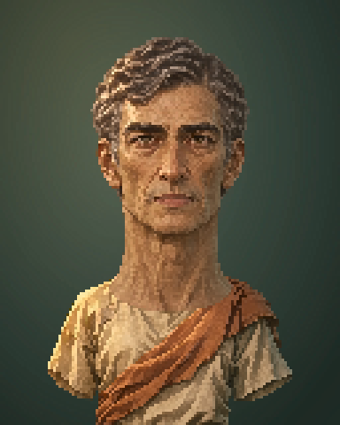
ef-p-m02-elder-work-v1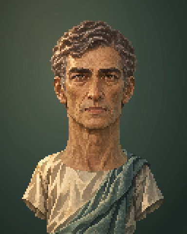
ef-p-m02-elder-maritime-v1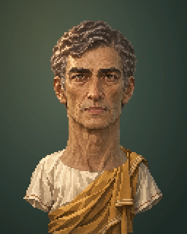
ef-p-m02-elder-commerce-v1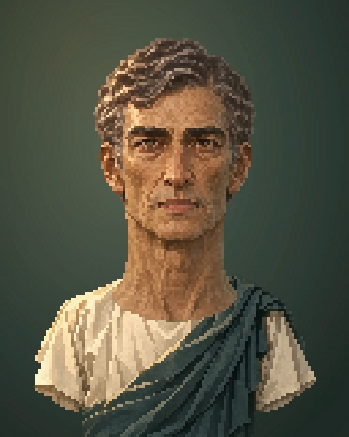
ef-p-m02-elder-scholarly-v1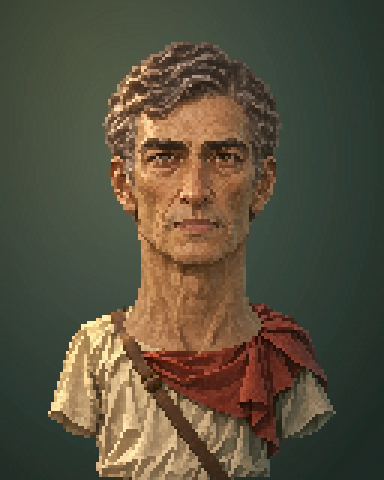
ef-p-m02-elder-military-v1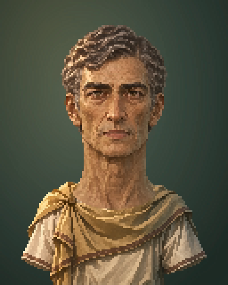
ef-p-m02-elder-elite-v1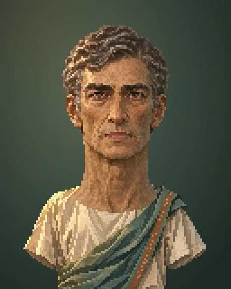
ef-p-m02-elder-performance-v1ef-p-m03-infant-infant-v1ef-p-m03-child-child-v1ef-p-m03-child-work-v1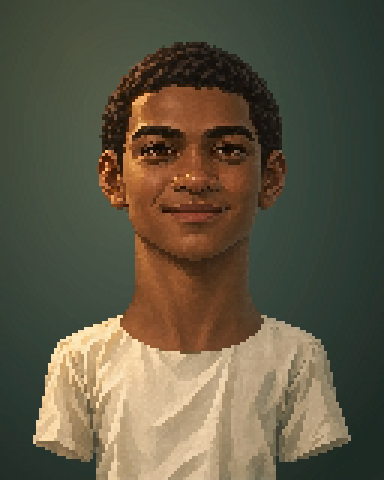
ef-p-m03-youth-youth-v1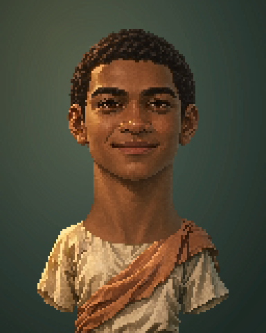
ef-p-m03-youth-work-v1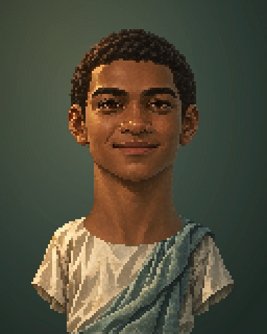
ef-p-m03-youth-maritime-v1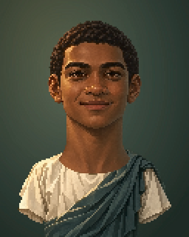
ef-p-m03-youth-scholarly-v1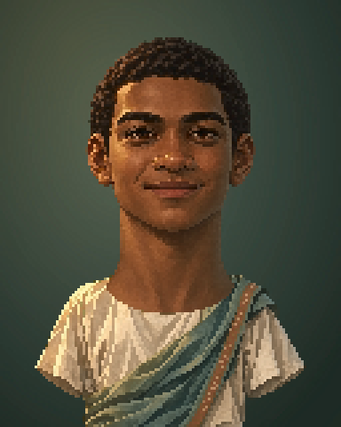
ef-p-m03-youth-performance-v1ef-p-m03-adult-everyday-v1ef-p-m03-adult-work-v1ef-p-m03-adult-maritime-v1ef-p-m03-adult-commerce-v1ef-p-m03-adult-scholarly-v1ef-p-m03-adult-military-v1ef-p-m03-adult-elite-v1ef-p-m03-adult-performance-v1ef-p-m03-middle-everyday-v1ef-p-m03-middle-work-v1ef-p-m03-middle-maritime-v1ef-p-m03-middle-commerce-v1ef-p-m03-middle-scholarly-v1ef-p-m03-middle-military-v1ef-p-m03-middle-elite-v1ef-p-m03-middle-performance-v1ef-p-m03-elder-everyday-v1ef-p-m03-elder-work-v1ef-p-m03-elder-maritime-v1ef-p-m03-elder-commerce-v1ef-p-m03-elder-scholarly-v1ef-p-m03-elder-military-v1ef-p-m03-elder-elite-v1ef-p-m03-elder-performance-v1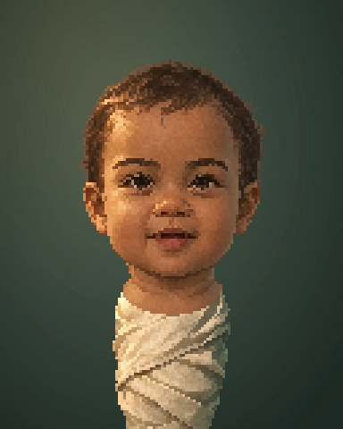
ef-p-f01-infant-infant-v1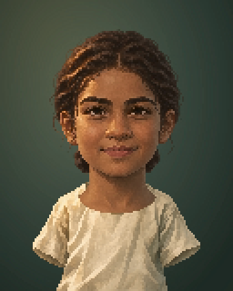
ef-p-f01-child-child-v1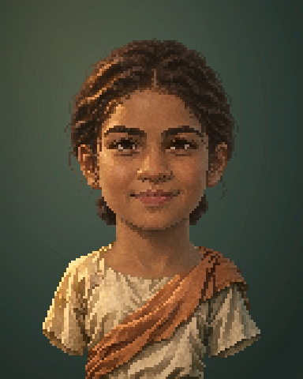
ef-p-f01-child-work-v1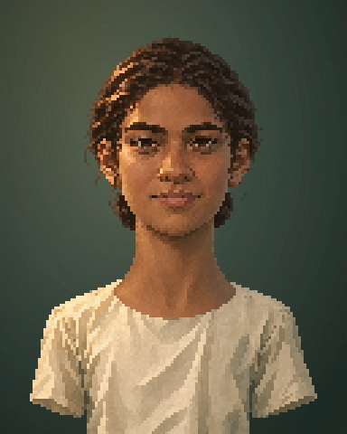
ef-p-f01-youth-youth-v1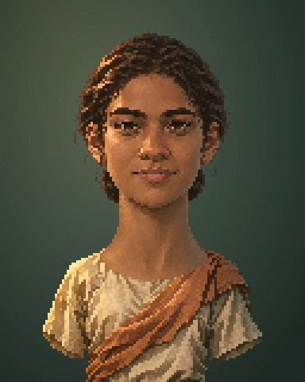
ef-p-f01-youth-work-v1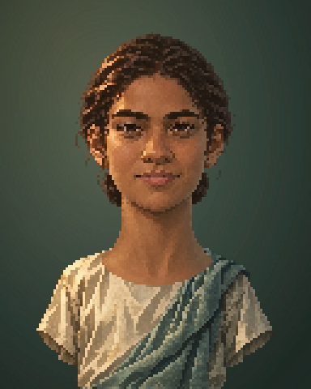
ef-p-f01-youth-maritime-v1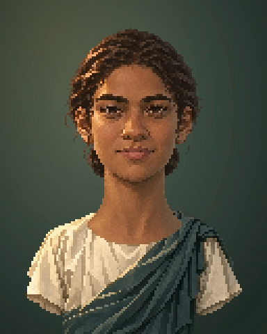
ef-p-f01-youth-scholarly-v1ef-p-f01-youth-performance-v1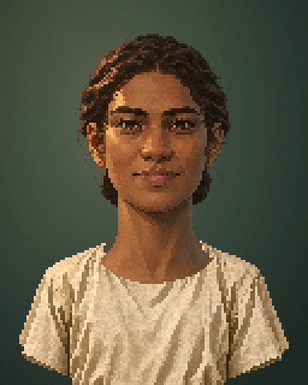
ef-p-f01-adult-everyday-v1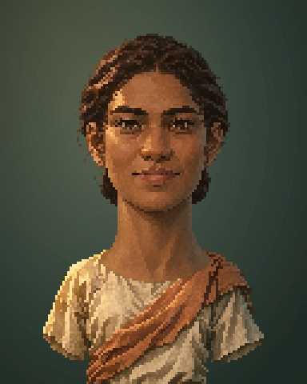
ef-p-f01-adult-work-v1ef-p-f01-adult-maritime-v1ef-p-f01-adult-commerce-v1ef-p-f01-adult-scholarly-v1ef-p-f01-adult-military-v1ef-p-f01-adult-elite-v1ef-p-f01-adult-performance-v1ef-p-f01-middle-everyday-v1ef-p-f01-middle-work-v1ef-p-f01-middle-maritime-v1ef-p-f01-middle-commerce-v1ef-p-f01-middle-scholarly-v1ef-p-f01-middle-military-v1ef-p-f01-middle-elite-v1ef-p-f01-middle-performance-v1ef-p-f01-elder-everyday-v1ef-p-f01-elder-work-v1ef-p-f01-elder-maritime-v1ef-p-f01-elder-commerce-v1ef-p-f01-elder-scholarly-v1ef-p-f01-elder-military-v1ef-p-f01-elder-elite-v1ef-p-f01-elder-performance-v1ef-p-f02-infant-infant-v1ef-p-f02-child-child-v1ef-p-f02-child-work-v1ef-p-f02-youth-youth-v1ef-p-f02-youth-work-v1ef-p-f02-youth-maritime-v1ef-p-f02-youth-scholarly-v1ef-p-f02-youth-performance-v1ef-p-f02-adult-everyday-v1ef-p-f02-adult-work-v1ef-p-f02-adult-maritime-v1ef-p-f02-adult-commerce-v1ef-p-f02-adult-scholarly-v1ef-p-f02-adult-military-v1ef-p-f02-adult-elite-v1ef-p-f02-adult-performance-v1ef-p-f02-middle-everyday-v1ef-p-f02-middle-work-v1ef-p-f02-middle-maritime-v1ef-p-f02-middle-commerce-v1ef-p-f02-middle-scholarly-v1ef-p-f02-middle-military-v1ef-p-f02-middle-elite-v1ef-p-f02-middle-performance-v1ef-p-f02-elder-everyday-v1ef-p-f02-elder-work-v1ef-p-f02-elder-maritime-v1ef-p-f02-elder-commerce-v1ef-p-f02-elder-scholarly-v1ef-p-f02-elder-military-v1ef-p-f02-elder-elite-v1ef-p-f02-elder-performance-v1ef-p-f03-infant-infant-v1ef-p-f03-child-child-v1ef-p-f03-child-work-v1ef-p-f03-youth-youth-v1ef-p-f03-youth-work-v1ef-p-f03-youth-maritime-v1ef-p-f03-youth-scholarly-v1ef-p-f03-youth-performance-v1ef-p-f03-adult-everyday-v1ef-p-f03-adult-work-v1ef-p-f03-adult-maritime-v1ef-p-f03-adult-commerce-v1ef-p-f03-adult-scholarly-v1ef-p-f03-adult-military-v1ef-p-f03-adult-elite-v1ef-p-f03-adult-performance-v1ef-p-f03-middle-everyday-v1ef-p-f03-middle-work-v1ef-p-f03-middle-maritime-v1ef-p-f03-middle-commerce-v1ef-p-f03-middle-scholarly-v1ef-p-f03-middle-military-v1ef-p-f03-middle-elite-v1ef-p-f03-middle-performance-v1ef-p-f03-elder-everyday-v1ef-p-f03-elder-work-v1ef-p-f03-elder-maritime-v1ef-p-f03-elder-commerce-v1ef-p-f03-elder-scholarly-v1ef-p-f03-elder-military-v1ef-p-f03-elder-elite-v1ef-p-f03-elder-performance-v1Top row: genuine museum photographs, kept unchanged. Bottom row: generated interpretations. Colors, facial designs and occupational grouping are creative choices; these are not exact reconstructions or attested professional uniforms.
Egyptian linen and simple shirt construction; earlier adjacent-period comparator. Not an exact pattern for our garment.
The Metropolitan Museum of Art, Rogers Fund, 1925. Public Domain.Wrapped/fringed garment context. A metal figure is not evidence for the generated cloth's material or color; possible priest identification is uncertain.
The Metropolitan Museum of Art, Theodore M. Davis Collection, Bequest of Theodore M. Davis, 1915. Public Domain.Comparative draped-cloth forms. Marble surface is not a textile/color claim or a likeness reference for the fictional cast.
The Metropolitan Museum of Art, Rogers Fund, 1911. Public Domain.The separate transparent head and garment components, original generated images, exact local prompts, source provenance and pixel QA are indexed from the manifest and agent map. Open an image to inspect its full-resolution file.